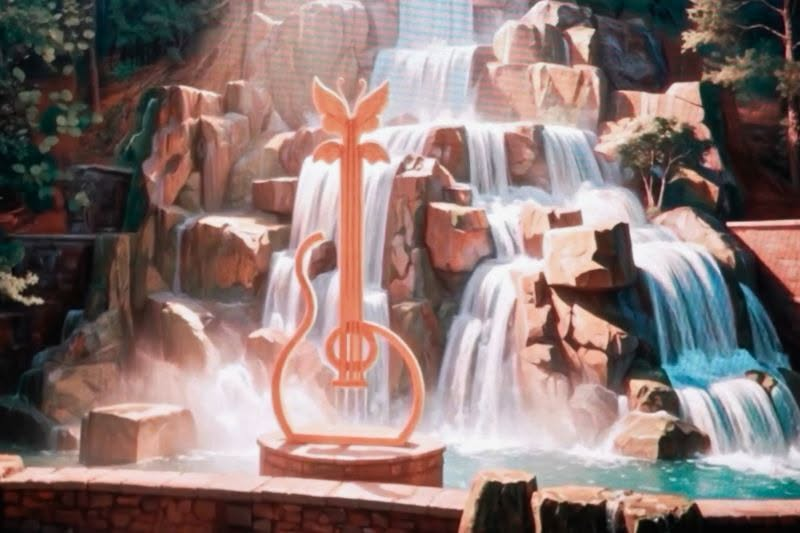

Dollywood prepares to carry Dolly Parton's dreams forward
2026, September 3
United States
Following the death of Dolly Parton at age 80, Dollywood has announced a series of permanent tributes and new experiences designed to preserve her influence on the park and the surrounding community.💦 A waterfall beside the chapel
One of the most striking additions will be a cascading mountainside waterfall outside the front steps of the Robert F. Thomas Chapel.
It is intended to be a peaceful place where visitors can stop, reflect and enjoy the Smoky Mountain setting that was so important to Parton.
The chapel will also receive new stained-glass windows depicting the changing seasons of the mountains. They will incorporate Parton's favourite Bible verse, from Ecclesiastes 3:1: “For everything there is a season, and a time for every matter under heaven.”
✨ Meet the "Dream Maker"
A new character called the Dream Maker will be introduced, inspired by Parton's hugely successful Imagination Library literacy programme.
The character is intended particularly to encourage children to dream big, read, tell stories and believe in possibilities—values that were central to Parton's work.
🎤 More of Dolly's story
The park will also expand The Dolly Parton Experience, its multi-building attraction devoted to her life and career.
Visitors will additionally be able to use interactive kiosks to leave their own memories and messages about Dolly, effectively creating a living collection of stories from the people she inspired.
🚶 "In Dolly's Footsteps"
The tributes won't be confined to Dollywood.
The nearby city of Sevierville, Tennessee, where Parton grew up, plans to install historical markers creating a self-guided walking tour of locations connected with her childhood and early life.
❤️ Perhaps the most important detail
Dollywood's management says these aren't simply ideas conceived after her death. President Eugene Naughton said park officials had extensive conversations with Parton over the years about how she wanted Dollywood's future to develop.
That makes the additions particularly meaningful: the intention isn't to turn Dollywood into a museum commemorating someone who is gone, but to continue the vision she had for the park.
Parton had wanted Dollywood to remain a place centred on families, kindness, joy, imagination and togetherness.
And fittingly for Dolly, the park isn't closing down or becoming a memorial site. It's carrying on.